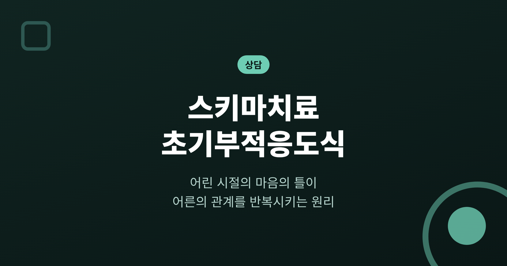
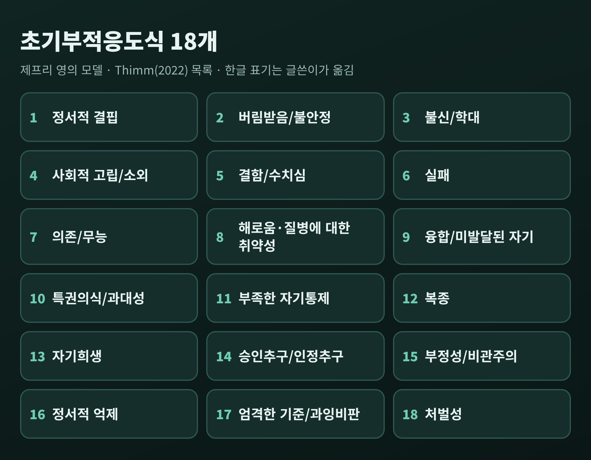
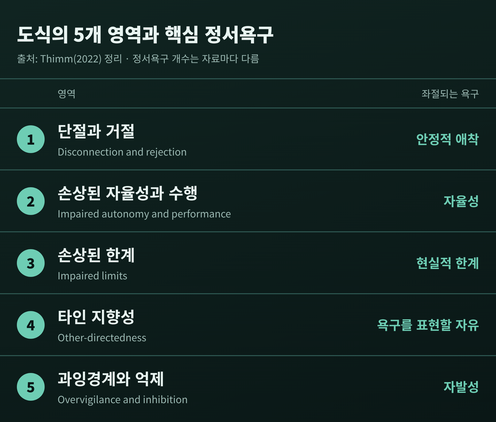
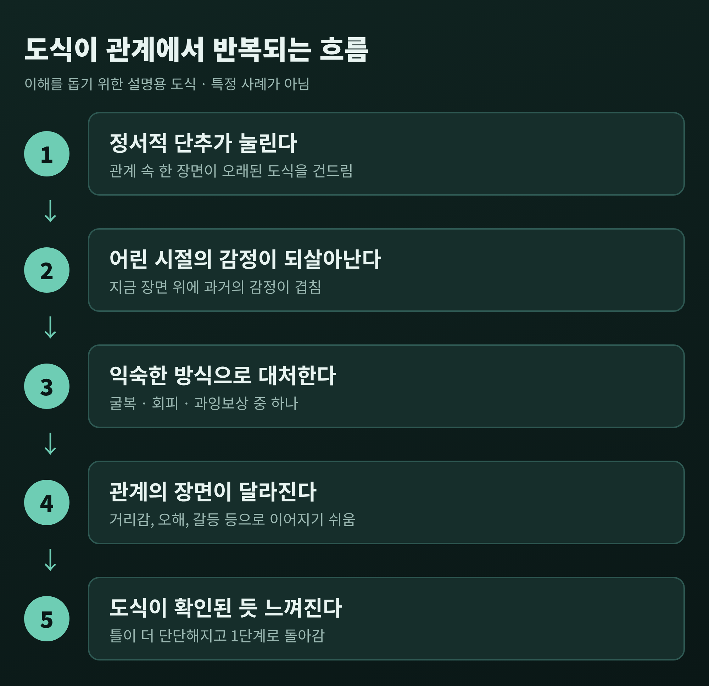
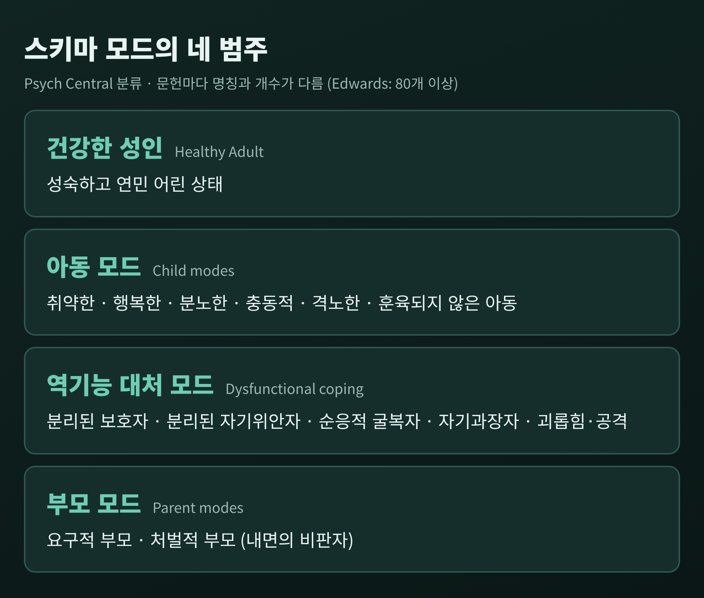
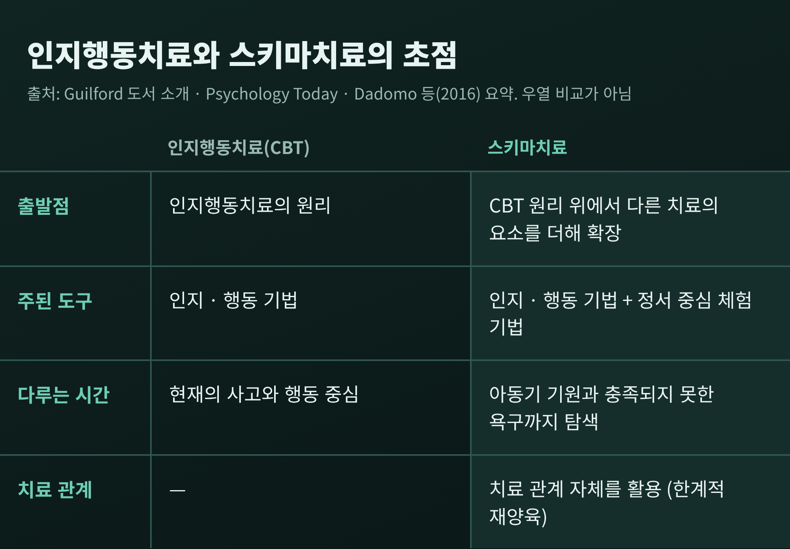

이번 글에서는 스키마치료의 핵심 개념인 초기부적응도식을 정리해 보겠습니다.
왜 비슷한 관계의 어려움이 되풀이되는지, 심리학이 그 이유를 어떻게 설명하는지 살펴봅니다.
도식의 구조와 치료 기법, 인지행동치료와의 차이까지 차례로 다룹니다.
세 줄 요약
스키마는 자신과 세상을 해석하는 신념, 정서, 태도의 틀을 뜻합니다. 안경에 비유되곤 합니다.
같은 장면도 어떤 안경을 쓰느냐에 따라 다르게 보입니다.
초기부적응도식(Early Maladaptive Schemas)은 그중에서도 어린 시절에 만들어져 어른이 된 뒤에도 삶을 제한하는 틀을 가리킵니다.
ESSPD 발표 자료는 이를 '생존 구성물'로 설명합니다.
기본 정서욕구가 채워지지 않던 시기에 아이가 살아남기 위해 만든 것이라는 뜻입니다.
처음에는 보호 기능을 했지만, 시간이 지나면서 오히려 선택을 좁히는 틀이 됩니다.
스키마치료 학회의 설명에 따르면 도식은 한 가지 원인으로 생기지 않습니다.
아이가 타고난 기질과, 부모·형제·또래와의 지속적인 해로운 경험이 맞물리며 발달합니다.
같은 환경에서도 사람마다 다른 도식이 생길 수 있다는 의미입니다.
특정 부모 한 명의 탓으로 단순하게 돌릴 수 없다는 점은 기억해 두시면 좋겠습니다.
제프리 영은 18개의 초기부적응도식을 정리했습니다. 2022년 메타분석 논문(Thimm)에 실린 목록은 다음과 같습니다.

이름만 읽어도 어떤 도식은 익숙하게 다가올 것입니다.
'버림받음'은 소중한 사람이 언젠가 떠날 것이라는 확신에 가깝습니다.
'정서적 결핍'은 내가 필요로 하는 돌봄과 공감을 아무도 주지 않을 것이라는 믿음입니다.
'결함/수치심'은 나는 근본적으로 부족하고 사랑받기 어렵다는 느낌과 이어집니다.
이런 설명은 도식의 이름이 가리키는 방향을 풀어 쓴 것이며, 읽는 분의 상태를 판단하는 기준이 될 수는 없습니다.
18개는 다섯 개의 영역으로 묶입니다. 각 영역은 아이가 필요로 하는 핵심 정서욕구와 짝을 이룹니다.

이 대응은 Thimm(2022)이 정리한 것입니다.
다만 정서욕구를 몇 가지로 보느냐는 자료마다 조금 다릅니다.
ESSPD 자료는 안전과 돌봄, 자율성과 유능감, 자발성과 놀이, 자기표현, 현실적 경계에 공정성과 자기 일관성까지 일곱 가지를 제시합니다.
영역의 개수도 합의된 사항은 아닙니다.
영의 1999년 모델은 다섯 영역이지만, 덴마크 성인 1,054명을 대상으로 한 Bach 등(2018)의 연구는 네 영역(단절과 거절, 손상된 자율성과 수행, 과도한 책임과 기준, 손상된 한계)이 더 잘 해석되고 경험적으로 지지된다고 보고했습니다.
Thimm의 메타분석 역시 27개 연구, 33개 독립 표본, 총 13,958명의 자료에서 다섯 영역 모델의 지지는 약했다고 기술합니다.
분류 체계는 지금도 연구되는 중입니다.
도식이 문제가 되는 순간은 평소가 아니라 건드려질 때입니다.
학회는 이를 개인의 '정서적 단추'가 눌리는 일로 표현합니다.
단추가 눌리면 어린 시절의 감정이 지금 이 순간의 장면 위에 겹쳐집니다.
이때 사람은 어릴 적 익힌 대처 방식으로 반응합니다. 학회가 제시하는 세 가지는 다음과 같습니다.
아래는 이해를 돕기 위한 가상의 흐름입니다. 특정 인물이나 실제 사례가 아닙니다.

예를 들어 '버림받음' 도식을 가진 사람을 생각해 보겠습니다.
연락이 평소보다 늦어지자 불안이 몰려옵니다. 단추가 눌린 것입니다.
굴복하면 확인을 되풀이하며 상대에게 매달리게 됩니다.
회피하면 상처받기 전에 먼저 관계를 끊습니다.
과잉보상하면 상대를 앞서 통제하려 하거나 감정이 없는 사람처럼 보이려 합니다.
세 반응은 겉으로 달라 보여도 결과가 비슷해지기 쉽습니다.
상대가 지치거나 멀어지고, 그 장면이 '역시 나는 버려지는구나'라는 믿음을 확인해 주는 것처럼 느껴집니다.
예전에는 도식이 아이를 지키는 방패였습니다. 지금은 같은 관계 장면을 불러오는 되풀이의 고리가 되는 셈입니다.
이 설명은 하나의 이해 틀일 뿐, 어떤 관계의 문제를 특정 도식 하나로 확정해 주지는 않습니다.
도식이 비교적 오래가는 신념의 틀이라면, 스키마 모드는 그 순간 우리를 지배하는 정서 상태와 대처 반응입니다.
Edwards(2022)는 모드를 '사고, 감정, 행동을 일시적으로 지배하는 순간순간의 정서 상태'로 정의합니다.
같은 사람이 어떤 때는 위축되고, 어떤 때는 날카롭고, 어떤 때는 차분합니다. 이 변화를 모드로 이해합니다.

위 분류는 Psych Central의 4범주를 옮긴 것입니다.
Edwards는 아동, 부모, 대처, 건강한 성인 범주 아래 80개 이상의 모드를 확인했다고 적었고, 부모 모드를 '내면의 비판자' 목소리로 이해합니다.
모드의 이름과 세부 분류는 문헌마다 조금씩 달라서, 하나의 정답이 있다고 보기는 어렵습니다.
건강한 성인 모드는 성숙하고 연민 어린 상태로 설명되며, 모드 작업은 이 모드와 가까워지는 데 초점을 둡니다.
메타인지 훈련과 마음챙김으로 모드에서 한 발 떨어져 바라보는 연습, 곧 '탈동일시'가 그 출발점으로 소개됩니다.
이 접근은 인지, 체험, 행동, 관계의 네 갈래 기법을 함께 씁니다.
한계적 재양육(limited reparenting)은 이 접근에서 가장 독특한 요소로 꼽힙니다.
치료자가 전문적 경계 안에서 안정적이고 안전한 인물로서 교정적 정서 경험을 제공합니다.
무조건적인 연민과 인정, 일관성과 안정성이 예로 제시됩니다.
ESSPD 자료는 그 요소를 돌봄 제공, 방향 제시, 공감적 직면, 한계 설정으로 정리합니다.
여기서 '한계적'이라는 단어가 중요합니다.
치료자가 부모를 대신하는 일이 아니라, 제한되고 윤리적인 틀 안에서 이뤄지는 작업이라고 Psychology Today는 강조합니다.
공감적 직면은 부적응 패턴에는 공감하되 변화를 격려하는 태도입니다.
이 치료는 인지행동치료의 원리 위에서 출발해, 다른 치료의 기법과 개념을 더해 확장한 통합적 접근입니다.
Young, Klosko, Weishaar의 교재 소개도 검증된 인지행동치료 기법 위에 다른 치료의 요소를 더했다고 설명합니다.
따라서 둘은 경쟁 관계라기보다 계보가 이어진 관계에 가깝습니다.

Dadomo 등(2016)은 이를 정신역동과 정서중심 치료의 요소를 끌어온 접근으로 소개합니다.
아동기의 결핍과 좌절 경험, 정서 중심의 체험 기법, 치료 관계에 대한 특별한 초점이 특징이라는 설명입니다.
같은 글은 표준 CBT 방법이 정서조절 곤란에는 덜 효과적일 수 있다는 논의도 함께 제시합니다.
다만 어느 쪽이 더 낫다는 결론은 근거가 확인되지 않아 내리지 않겠습니다.
어떤 접근이 맞는지는 호소하는 어려움과 개인의 상황에 따라 달라지기 때문입니다.
근거는 성격장애, 특히 경계성 성격장애에서 가장 두텁습니다.
Giesen-Bloo 등(2006)은 경계성 성격장애 외래 환자 88명을 무작위로 배정해, 3년간 주 2회 진행한 스키마 중심 치료와 전이초점심리치료를 비교했습니다.
3년 뒤 스키마 중심 치료 쪽이 회복(상대위험 2.18)과 신뢰할 만한 임상적 호전(상대위험 2.33)에서 더 높았습니다.
네덜란드 12개 기관의 성격장애 환자 323명을 비교한 다기관 연구(Bamelis 등)도 있습니다.
스키마치료의 회복률은 약 80%, 비교 치료는 약 60%와 약 50%였다고 보고됩니다.
다만 이 수치는 국제스키마치료학회의 보도자료를 통해 확인한 것이어서, 독립적 서술은 아니라는 점을 감안해야 합니다.
한계도 분명합니다.
Psychology Today는 지지 연구가 소규모이고 문헌이 아직 제한적이어서, 효과와 적합한 조건을 확립하려면 무작위 대조시험이 더 필요하다는 견해를 전합니다.
불안, 강박, 외상후 스트레스 장애에 대한 연구는 제한적이며, 현재 성인 대상이 중심이고 치료 기간이 길다는 점도 알려져 있습니다.
국내 연구에서는 강박장애 외래환자 38명을 대조군 79명과 비교해 결함/수치심, 해로움·질병에 대한 취약성, 부정성/비관주의 도식 점수가 높게 나타났다는 보고(이상원 등, 2010)가 있습니다.
조현병 환자 연구(장태양·이승재, 2020)도 표본이 작은 횡단 연구여서 인과를 말하기 어렵다고 스스로 밝힙니다.
도식과 증상이 함께 나타난다는 것이 도식이 증상의 원인이라는 뜻은 아닙니다.
도식 목록을 읽다 보면 자신의 이야기처럼 느껴지는 항목이 있을 수 있습니다.
그것은 자신을 이해하는 실마리일 뿐, 진단이나 처방은 아닙니다.
이 글만으로 자신의 도식이나 모드를 판단하는 일은 권하지 않습니다.
관계의 어려움이 오래 반복되거나, 일상이 힘들 만큼 괴롭다면 혼자 해석하기보다 전문 상담사나 정신건강 전문가와 이야기해 보시길 권합니다.
위기 상황이라면 지역의 정신건강 위기 상담 전화나 응급 의료기관에 바로 연락하시기 바랍니다.
정리하면 이렇습니다.
어린 시절의 틀은 우리를 지키려고 만들어졌고, 같은 이유로 어른의 관계 안에서 되풀이됩니다.
"반복은 약점이 아니라, 오래된 보호의 흔적입니다."
그 흔적을 알아차리는 일이 달라지는 첫걸음이라면, 오늘 이 글을 끝까지 읽으신 것만으로도 이미 한 걸음을 떼신 것이 아닐까 생각합니다.